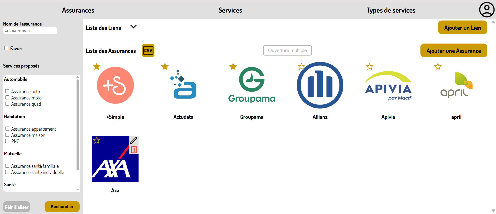
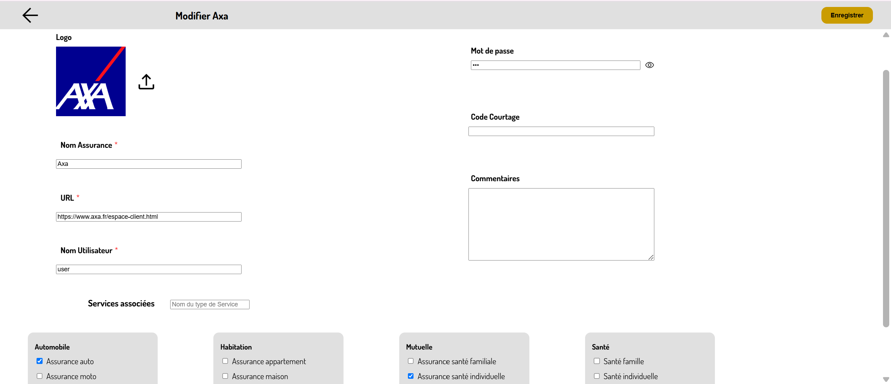
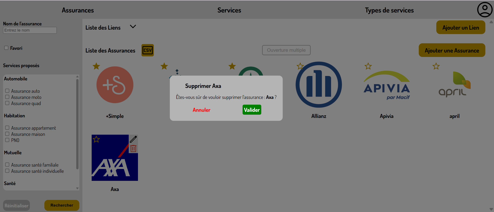

Présentation et évaluation de savoir-faire techniques
Cette partie permet de présenter et évaluer les savoir-faire techniques ...
Gérer les données via un SCRUD : Search Create Read Update Delete

Savoir-faire élémentaires : Créer des fonctionnalités pertinentes aux besoins utilisateurs , Créer une base de données et sécuriser les informations qu'elle contient et Lier le backend et le frontend d'une application web (en utilisant le modèle MVC) .

Trace 8 : Page d'accueil de l'application webLe principe de ce site est de lister les différentes assurances avec lesquels l'entreprise de courtage Sily Courtage et son équipe travaillent. À l'heure actuelle, l'entreprise possède des accès avec pas moins de 60 assurances différentes. Ainsi, et comme cela était expliqué dans mon sujet de stage, j'ai du mettre en place un filtre pour facilité et personnalisé l'accès aux assurances.
Les différentes possibilités du filtre n'étant pas définies, j'ai choisi naturellement, en questionnant les futurs utilisateurs et m'inspirant d'autres filtres, de pouvoir y faire le tri des assurances selon (voir le filtre sur la partie gauche de la trace 8) :
- - leurs noms,
- - le fait qu'elles soient favorites ou non pour l'utilisateur connecté,
- - et les différents services proposés par celles-ci.

Trace 9 : Page de modification d'assuranceComme dis auparavant, l'objectif de l'application est de recencer des assurances. Mais, celles-ci ne sont pas figées. De nouvelles peuvent apparaitre ou des accès peuvent changer. C'est dans cet objectif que les utilisateurs de l'application peuvent intéragir avec les différentes informations présentes au sein de la base de données en modifiant ou ajoutant son contenu (assurance, service, type de service, utilisateur, ...).
Bien sur, ces actions sont possibles suivant les droits de l'utilisateur (seul un admin peut ajouter un utilisateur et modifer un profil autre que le sien).
De plus, les insertions et modifications sont faite de sorte à ce que l'application soit protégée contre les failles :
- - XSS avec des champs textes nettoyés, des données échappées,
- - ou encore l'injection SQL grâce à des requêtes préparées.
Sur la trace 9, on peut voir la page de mofication d'une assurance (ici Axa). Sur le principe, elle est en tout point identique à une page d'ajout d'une assurance mais avec les champs contenant déjà de l'information étant préremplis.

Trace 10 : Apperçu lors de la suppression d'une assuranceEnfin, la dernière action de SCRUD : supprimer les élements.
Pour cette action, seul un compte administrateur y est autorisé (et y a accès sur les pages). De plus, afin d'éviter toute une perte définitive d'information via une erreur de clic, un pop-up d'avertissement demande à l'administrateur de valider son action (voir la trace 10).